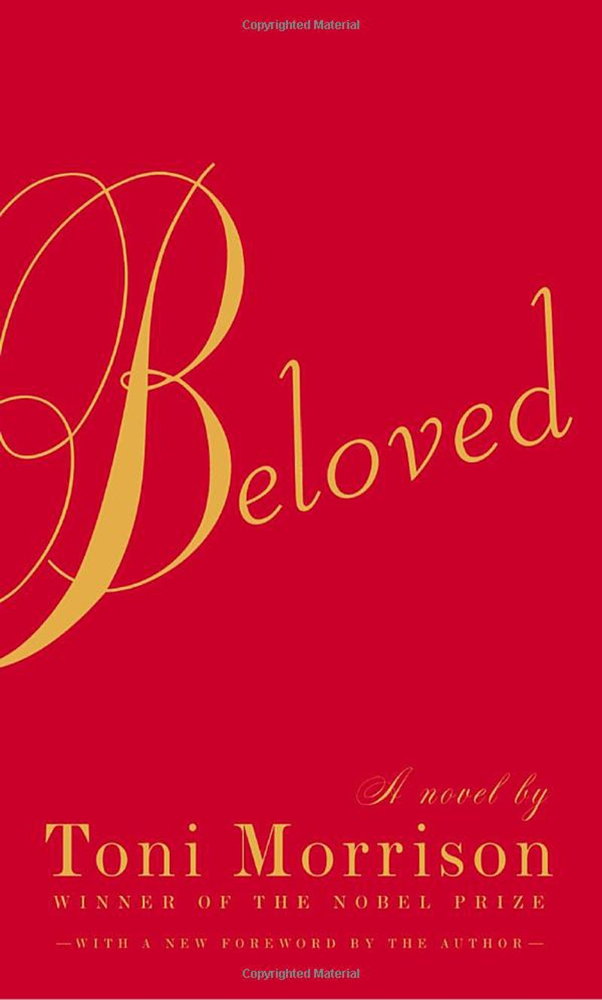
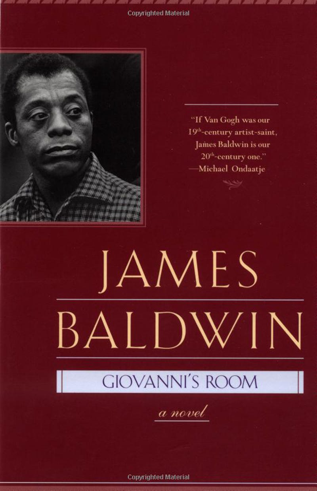
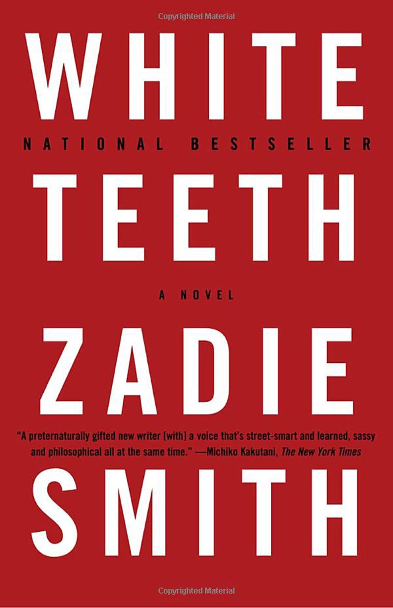
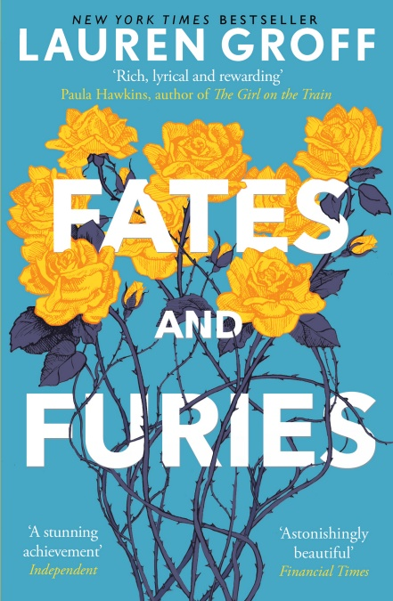
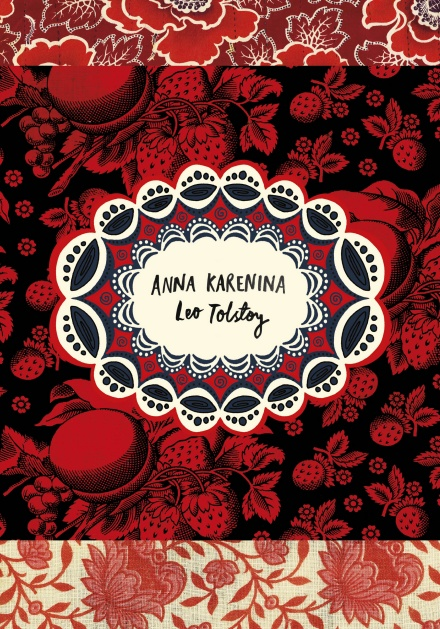

Dinosaurs and All That Rubbish Michael Foreman, (HarperCollins)
.jpg) The conservation message of this book, published in 1972, is ahead of its time. Humans look at a
distant star and think it looks a lot more attractive than Earth, so sets out to reach it. But why is the
Earth unattractive? Because humans have spoilt it. Built over and rubbish-strewn, it is a mess. But the
dinosaurs awaken and begin to tidy up. Humans can only return if they promise to share the Earth in future.
Brilliant illustrations convey an important message without preaching.
The conservation message of this book, published in 1972, is ahead of its time. Humans look at a
distant star and think it looks a lot more attractive than Earth, so sets out to reach it. But why is the
Earth unattractive? Because humans have spoilt it. Built over and rubbish-strewn, it is a mess. But the
dinosaurs awaken and begin to tidy up. Humans can only return if they promise to share the Earth in future.
Brilliant illustrations convey an important message without preaching.
The General Michael Foreman and Janet Charters (Templar)
.jpg) General Jodhpur loves to train his soldiers, and has made them the best fighting force in the world.
But one day he discovers the beauty of the countryside and realises that saving the flowers and trees and
creatures who live in them is more important than fighting. An important message delivered in striking
pictures.
General Jodhpur loves to train his soldiers, and has made them the best fighting force in the world.
But one day he discovers the beauty of the countryside and realises that saving the flowers and trees and
creatures who live in them is more important than fighting. An important message delivered in striking
pictures.
Clever Polly and the Stupid Wolf Catherine Storr, illustrated by Marjorie Ann Watts (Jane Nissen Books)
.jpg) How resourceful Polly outwits the wolf who eagerly stalks her in the hope of eating her is a masterly
blend of risk-taking and triumph. In each story, the wolf has a well-thought out plan and Polly manages to
circumvent it. Plenty of literary allusions – the wolf is familiar with the story of Little Red Riding Hood
and knows all about how magic beans grow.
How resourceful Polly outwits the wolf who eagerly stalks her in the hope of eating her is a masterly
blend of risk-taking and triumph. In each story, the wolf has a well-thought out plan and Polly manages to
circumvent it. Plenty of literary allusions – the wolf is familiar with the story of Little Red Riding Hood
and knows all about how magic beans grow.
Horrid Henry
Francesca Simon, illustrated by Tony Ross (Orion)
.jpg) "Henry was horrid. Everyone said so. Even his mother." So arrives Horrid Henry, one of the most
successful antiheroes in kids' fiction. Henry snatches, pushes, shoves and pinches. But these acts are
nothing compared with how horrid Henry is to his brother, Perfect Peter. In the four stories in this volume,
Henry does anything to get what he wants. With an unerring ability to capture the cruellest details of
sibling rivalry, these stories are driven by an infectious humour that tempers the tension.
"Henry was horrid. Everyone said so. Even his mother." So arrives Horrid Henry, one of the most
successful antiheroes in kids' fiction. Henry snatches, pushes, shoves and pinches. But these acts are
nothing compared with how horrid Henry is to his brother, Perfect Peter. In the four stories in this volume,
Henry does anything to get what he wants. With an unerring ability to capture the cruellest details of
sibling rivalry, these stories are driven by an infectious humour that tempers the tension.
Mr Gum and the Biscuit Billionaire
Andy Stanton, illustrated by David Tazzyman (Egmont)
.jpg) Nasty and disgusting antiheroes of a Dahlesque kind are in vogue; their filthy habits and displeasing
behaviour makes them both childlike and a delightful source of easy humour. Mr Gum is just such a character:
he hates children, animals, fun and every cartoon that has ever been made. But he loves money and will do
anything to get his hands on some. Can anyone stop him? Read and find out.
Nasty and disgusting antiheroes of a Dahlesque kind are in vogue; their filthy habits and displeasing
behaviour makes them both childlike and a delightful source of easy humour. Mr Gum is just such a character:
he hates children, animals, fun and every cartoon that has ever been made. But he loves money and will do
anything to get his hands on some. Can anyone stop him? Read and find out.
Fantastic Mr Fox Roald Dahl (Puffin)
.jpg) "Boggis and Bunce and Bean/ One fat, one short, one lean ..." Rarely have there been three more
brilliantly disgusting crooks. The farmers are the deadly enemies of Mr Fox, who will go to any lengths to
keep his family safe, resulting in an audacious scheme. It has to be, because the farmers are every bit as
determined to get Mr Fox as he is to outwit them. And though he may be a thief, he is no villain. Rather,
he's a hero and readers love him for it.
"Boggis and Bunce and Bean/ One fat, one short, one lean ..." Rarely have there been three more
brilliantly disgusting crooks. The farmers are the deadly enemies of Mr Fox, who will go to any lengths to
keep his family safe, resulting in an audacious scheme. It has to be, because the farmers are every bit as
determined to get Mr Fox as he is to outwit them. And though he may be a thief, he is no villain. Rather,
he's a hero and readers love him for it.
The Conquerors
David McKee (Andersen)
.jpg) In this children's masterpiece, David McKee has created a miniature morality tale. The General leads
his army into one country after another, subjugating the population and bringing them under his command.
Finally, there is just one tiny country left to invade and the General leads his men forth. But here there
is no conquest. Instead, the soldiers join the people and soon two countries are co-existing rather than
fighting. Beautifully understated but packs a punch.
In this children's masterpiece, David McKee has created a miniature morality tale. The General leads
his army into one country after another, subjugating the population and bringing them under his command.
Finally, there is just one tiny country left to invade and the General leads his men forth. But here there
is no conquest. Instead, the soldiers join the people and soon two countries are co-existing rather than
fighting. Beautifully understated but packs a punch.
Ottoline Goes to School Chris Riddell (Macmillan)
.jpg) An entertaining and frothy confection of a story, this spoofs familiar school themes. Ottoline takes up
her place at the Alice B Smith School for the Differently Gifted, accompanied by her unusual dog, Mr Munroe.
While others develop their particular gifts, Ottoline begins to worry that she doesn't have one. Luckily,
there is something special Ottoline can do, as the illustrations help to show.
An entertaining and frothy confection of a story, this spoofs familiar school themes. Ottoline takes up
her place at the Alice B Smith School for the Differently Gifted, accompanied by her unusual dog, Mr Munroe.
While others develop their particular gifts, Ottoline begins to worry that she doesn't have one. Luckily,
there is something special Ottoline can do, as the illustrations help to show.
The Iron Man
Ted Hughes (Faber)
.jpg) Taller than a house and with a head shaped like a dustbin the size of a bedroom, the Iron Man appears
at the top of the cliff at the beginning of one of the greatest modern fairy stories. Where he comes from
nobody knows. When he topples over the cliff and breaks into tiny bits it looks like the end. But the Iron
Man has mysterious powers, which he harnesses to save the world.
Taller than a house and with a head shaped like a dustbin the size of a bedroom, the Iron Man appears
at the top of the cliff at the beginning of one of the greatest modern fairy stories. Where he comes from
nobody knows. When he topples over the cliff and breaks into tiny bits it looks like the end. But the Iron
Man has mysterious powers, which he harnesses to save the world.
Iggy and Me Jenny Valentine, illustrated by Joe Berger (HarperCollins)
.jpg) Older sister Flo tells these stories of her irrepressible and original younger sister Iggy. Both
appalled and enchanted by Iggy's unusual antics, which include changing her name and cutting her own hair,
Flo paints a warm-hearted picture of family life.
Older sister Flo tells these stories of her irrepressible and original younger sister Iggy. Both
appalled and enchanted by Iggy's unusual antics, which include changing her name and cutting her own hair,
Flo paints a warm-hearted picture of family life.
Front Desk by Kelly Yang
.jpg) Mia and her parents have struggled ever since moving to America from China. When her parents take a new
live-in job at a motel, they end up working around the clock for very little pay. Mia helps out by working
at the front desk. She befriends the weekly tenants and uses her English skills to write letters advocating
other people in tough spots. This book is more than a memorable coming-of-age immigrant story, it’s also
about tolerance and diversity.
Mia and her parents have struggled ever since moving to America from China. When her parents take a new
live-in job at a motel, they end up working around the clock for very little pay. Mia helps out by working
at the front desk. She befriends the weekly tenants and uses her English skills to write letters advocating
other people in tough spots. This book is more than a memorable coming-of-age immigrant story, it’s also
about tolerance and diversity.
Wink by Rob Harrell
.jpg) I highly recommend this funny, standout cancer story based on the author’s life for readers who like
humorous but emotion-filled stories. When Ross is diagnosed with a rare kind of tumor, he immediately starts
radiation treatment. School becomes pretty challenging because his eye is goopy, he has to wear a hat, and
his hair starts falling out in clumps– among other things made funny with his cartoon drawings.
I highly recommend this funny, standout cancer story based on the author’s life for readers who like
humorous but emotion-filled stories. When Ross is diagnosed with a rare kind of tumor, he immediately starts
radiation treatment. School becomes pretty challenging because his eye is goopy, he has to wear a hat, and
his hair starts falling out in clumps– among other things made funny with his cartoon drawings.
Brothers Keeper by Julie Lee
.jpg) Based on her grandmother’s escape from North Korea, this historical fiction story is a powerful read
that captures the fearful culture of North Korea, the marginalization of females, and the bond between
siblings. As war erupts between North and South Korea, Sora and her family decide to flee from North Korea
while they still have a chance. But she and her little brother are separated from their family. As they
continue south, they experience starvation, winter’s brutal cold with the Red Army marching right behind
them.
Based on her grandmother’s escape from North Korea, this historical fiction story is a powerful read
that captures the fearful culture of North Korea, the marginalization of females, and the bond between
siblings. As war erupts between North and South Korea, Sora and her family decide to flee from North Korea
while they still have a chance. But she and her little brother are separated from their family. As they
continue south, they experience starvation, winter’s brutal cold with the Red Army marching right behind
them.
The Canyon’s Edge by Dusti Bowling
.jpg) Written in verse, this is a heart-wrenching, heart-stopping, suspenseful adventure with lyrical,
figurative language about an intense journey of physical hardship and emotional healing. Shifting
perspectives between before and after her mom was shot, Nora and her dad climb into a Sonoran Desert canyon
for the first time in the year since her mom died. Just as Nora tells her father she hates him, a flash
flood careens through the canyon, carrying her father and their supplies away.
Written in verse, this is a heart-wrenching, heart-stopping, suspenseful adventure with lyrical,
figurative language about an intense journey of physical hardship and emotional healing. Shifting
perspectives between before and after her mom was shot, Nora and her dad climb into a Sonoran Desert canyon
for the first time in the year since her mom died. Just as Nora tells her father she hates him, a flash
flood careens through the canyon, carrying her father and their supplies away.
The Night Diary by Veera Hiranandani.
 I could not put this book down! Nisha and her twin brother are half-Muslim, half-Hindu siblings living
with their father in India just before the time of Partition. When the word comes that their town is to
become part of the new Pakistan state, Nisha, her brother, her Hindu father and grandmother must make the
harrowing and dangerous journey to the Indian border.
I could not put this book down! Nisha and her twin brother are half-Muslim, half-Hindu siblings living
with their father in India just before the time of Partition. When the word comes that their town is to
become part of the new Pakistan state, Nisha, her brother, her Hindu father and grandmother must make the
harrowing and dangerous journey to the Indian border.
Slider by Pete Hautman.
.png) When David accidentally charges $2000 to his mom’s credit card, he concocts a plan to get the money by
winning a pizza eating contest. In between prepping his stomach for the contest and taking care of his
neuro-atypical brother, Mal, David must also figure out where he stands when his two best friends find
themselves in a relationship. This book has lots of laughs but is also a meaningful read and many 13 year
olds will understand David’s struggle with friends and family.
When David accidentally charges $2000 to his mom’s credit card, he concocts a plan to get the money by
winning a pizza eating contest. In between prepping his stomach for the contest and taking care of his
neuro-atypical brother, Mal, David must also figure out where he stands when his two best friends find
themselves in a relationship. This book has lots of laughs but is also a meaningful read and many 13 year
olds will understand David’s struggle with friends and family.
The Hunger Games series by Suzanne Collins
.jpg) In the ruins of a future North America, a young girl is picked to leave her impoverished district and
travel to the decadent Capitol for a battle to the death in the savage Hunger Games. But for Katniss
Everdeen, winning the Games only puts her deeper in danger as the strict social order of Panem begins to
unravel.
In the ruins of a future North America, a young girl is picked to leave her impoverished district and
travel to the decadent Capitol for a battle to the death in the savage Hunger Games. But for Katniss
Everdeen, winning the Games only puts her deeper in danger as the strict social order of Panem begins to
unravel.
The Fault in Our Stars by John Green
.jpg) Despite the tumor-shrinking medical miracle that has bought her a few more years, Hazel has never been
anything but terminal, her final chapter inscribed upon diagnosis. But when a gorgeous plot twist named
Augustus Waters suddenly appears at the Cancer Kid Support Group, Hazel's story is about to be completely
rewritten.
Despite the tumor-shrinking medical miracle that has bought her a few more years, Hazel has never been
anything but terminal, her final chapter inscribed upon diagnosis. But when a gorgeous plot twist named
Augustus Waters suddenly appears at the Cancer Kid Support Group, Hazel's story is about to be completely
rewritten.
The Hobbit by J.R.R. Tolkien
.jpg) Bilbo Baggins, a respectable, well-to-do hobbit, lives comfortably in his hobbit hole until the day the
wandering wizard Gandalf chooses him to take part in an adventure from which he may never return.
Bilbo Baggins, a respectable, well-to-do hobbit, lives comfortably in his hobbit hole until the day the
wandering wizard Gandalf chooses him to take part in an adventure from which he may never return.
Harry Potter series by J.K. Rowling
.jpg) The adventures of Harry Potter, the Boy Who Lived, and his wand-wielding friends at the Hogwarts School
of Witchcraft and Wizardry. Harry, Ron and Hermione must master their craft and battle the machinations of
the evil wizard Voldemort and his Death Eaters.
The adventures of Harry Potter, the Boy Who Lived, and his wand-wielding friends at the Hogwarts School
of Witchcraft and Wizardry. Harry, Ron and Hermione must master their craft and battle the machinations of
the evil wizard Voldemort and his Death Eaters.
Beloved by Toni Morrison

This book was named "the single best work of American fiction published in the last twenty-five years"
by The New York Times for a reason.
The haunting story about life post-slavery is studied wide and far in high schools across the country, but
going back to it in your twenties (or reading it then for the first time) will make you look deeper at your
own past, present, and future.
The Brief Wondrous Life of Oscar Wao by Junot Díaz
.jpeg) This book might just cure you of pessimism. The author takes readers on an emotional roller coaster with
this Pulitzer Prize winning novel. It will probably make most readers cry, but it will definitely make every
reader a little bit braver.
This book might just cure you of pessimism. The author takes readers on an emotional roller coaster with
this Pulitzer Prize winning novel. It will probably make most readers cry, but it will definitely make every
reader a little bit braver.
Giovanni’s Room by James Baldwin

This higly-acclamied novel follows an American man as he's living in Paris, and became a staple in
literature for finally shedding real light on both homosexuality and bisexuality.It will make you want to
travel to France, but more importantly, it will give you a deeper understanding of how fear and shame can
affect a person.
White Teeth by Zadie Smith

Smith's debut novel, which she wrote when she was only 24 (!), caught the world by storm. It tackled
everything from sex to parenthood and religion to gender politics as it follows the lives of two World War
II veterans as they immigrate in London.
The Alchemist by Paulo Coelho
.jpeg) This book is all about listening to your gut and following your heart. With lessons like chasing your
dreams and never giving up, there's a lot for twenty-somethings to learn over and over again.
This book is all about listening to your gut and following your heart. With lessons like chasing your
dreams and never giving up, there's a lot for twenty-somethings to learn over and over again.
Fates and Furies by Lauren Groff (2015)

Fate and Furies was the most talked-about novel of 2015 – a word-of-mouth sensation that even landed on
the bedside table of Barack Obama, who chose it as one of his favourite books of the year.So, it's a
marriage seen from two sides. The first half ('Fates') is the husband's perspective. For him, things are
fine, mostly happy, quite complacent. The second is the wife's ('Furies'). For her, things aren't great at
all.
Anna Karenina by Leo Tolstoy (1878)

This is the ultimate writers novel, said by many to be the greatest work of literature ever written. It
is about a beautiful and rich noblewoman who seems to have everything, yet is unsatisfied. Until, that is, a
handsome army officer sweeps her off her feet. Their affair scandalises Russian high society, as well as her
family, unleashing a wave of bitterness and jealousy.
The Great Gatsby by F Scott Fitzgerald (1925)
.jpg) This American classic contains possibly the greatest – and most brutal – line anywhere in literature
about the grating fear of leaving your twenties. 'I was thirty,' groans protagonist Nick on his birthday,
'Before me stretched the portentous menacing round of a new decade … Thirty – the promise of a decade of
loneliness, a thinning list of single men to know, a thinning brief-case of enthusiasm, thinning
hair.'
This American classic contains possibly the greatest – and most brutal – line anywhere in literature
about the grating fear of leaving your twenties. 'I was thirty,' groans protagonist Nick on his birthday,
'Before me stretched the portentous menacing round of a new decade … Thirty – the promise of a decade of
loneliness, a thinning list of single men to know, a thinning brief-case of enthusiasm, thinning
hair.'
Fear of Flying by Erica Jong (1973)
.jpg) This was the book that, more than any other of its time, changed the way the western world thought, and
talked, about sex. It follows a young female erotic poet called Isadora Wing who, bored with her second
marriage, ditches her husband at a psychoanalysts' conference in Vienna to travel through Europe in search
of herself, and great sex (so long as the latter comes with no strings). The only thing holding her back: a
crippling fear of flying.
This was the book that, more than any other of its time, changed the way the western world thought, and
talked, about sex. It follows a young female erotic poet called Isadora Wing who, bored with her second
marriage, ditches her husband at a psychoanalysts' conference in Vienna to travel through Europe in search
of herself, and great sex (so long as the latter comes with no strings). The only thing holding her back: a
crippling fear of flying.
On Chesil Beach by Ian McEwan (2006)
.jpg) A moving tale of sexual discovery in young marriage, the fragility of young love and ultimately, about
the difficult transition from childhood to adulthood, On Chesil Beach is a post-nuptial psychodrama that
lingers like a sad song.Set in July 1962, as Britain teetered on the brink of the Swinging Sixties, Edward
and Florence, 22 and 23, are on honeymoon, about to lose their virginities. Only, each has a vastly
different view on how it should go down.
A moving tale of sexual discovery in young marriage, the fragility of young love and ultimately, about
the difficult transition from childhood to adulthood, On Chesil Beach is a post-nuptial psychodrama that
lingers like a sad song.Set in July 1962, as Britain teetered on the brink of the Swinging Sixties, Edward
and Florence, 22 and 23, are on honeymoon, about to lose their virginities. Only, each has a vastly
different view on how it should go down.
Americanah by Chimamanda Ngozi Adichie
.jpeg) "Ifemelu and Obinze are young and in love when they depart military-ruled Nigeria for the West.
Beautiful, self-assured Ifemelu heads for America, where despite her academic success, she is forced to
grapple with what it means to be black for the first time. Quiet, thoughtful Obinze had hoped to join her,
but with post-9/11 America closed to him, he instead plunges into a dangerous, undocumented life in
London.
"Ifemelu and Obinze are young and in love when they depart military-ruled Nigeria for the West.
Beautiful, self-assured Ifemelu heads for America, where despite her academic success, she is forced to
grapple with what it means to be black for the first time. Quiet, thoughtful Obinze had hoped to join her,
but with post-9/11 America closed to him, he instead plunges into a dangerous, undocumented life in
London.
I'll Give You the Sun by Jandy Nelson
.jpeg) At first, Jude and her twin brother are NoahandJude; inseparable. Noah draws constantly and is falling
in love with the charismatic boy next door, while daredevil Jude wears red-red lipstick, cliff-dives, and
does all the talking for both of them.Years later, they are barely speaking. Something has happened to
change the twins in different yet equally devastating ways . . . but then Jude meets an intriguing,
irresistible boy and a mysterious new mentor.
At first, Jude and her twin brother are NoahandJude; inseparable. Noah draws constantly and is falling
in love with the charismatic boy next door, while daredevil Jude wears red-red lipstick, cliff-dives, and
does all the talking for both of them.Years later, they are barely speaking. Something has happened to
change the twins in different yet equally devastating ways . . . but then Jude meets an intriguing,
irresistible boy and a mysterious new mentor.
The Immortal Life of Henrietta Lacks by Rebecca Skloot
.jpeg) Her name was Henrietta Lacks, but scientists know her as HeLa. She was a poor black tobacco farmer
whose cells—taken without her knowledge in 1951—became one of the most important tools in medicine, vital
for developing the polio vaccine, cloning, gene mapping, and more. Henrietta's cells have been bought and
sold by the billions, yet she remains virtually unknown, and her family can't afford health
insurance.
Her name was Henrietta Lacks, but scientists know her as HeLa. She was a poor black tobacco farmer
whose cells—taken without her knowledge in 1951—became one of the most important tools in medicine, vital
for developing the polio vaccine, cloning, gene mapping, and more. Henrietta's cells have been bought and
sold by the billions, yet she remains virtually unknown, and her family can't afford health
insurance.
The Tipping Point by Malcom Gladwell
.jpeg) The tipping point is that magic moment when an idea, trend, or social behavior crosses a threshold,
tips, and spreads like wildfire. Just as a single sick person can start an epidemic of the flu, so too can a
small but precisely targeted push cause a fashion trend, the popularity of a new product, or a drop in the
crime rate.
The tipping point is that magic moment when an idea, trend, or social behavior crosses a threshold,
tips, and spreads like wildfire. Just as a single sick person can start an epidemic of the flu, so too can a
small but precisely targeted push cause a fashion trend, the popularity of a new product, or a drop in the
crime rate.
Flow by Mihaly Csikszentmihalyi
.jpeg) Psychologist Mihaly Csikszentmihalyi's famous investigations of "optimal experience" have revealed that
what makes an experience genuinely satisfying is a state of consciousness called flow. During flow, people
typically experience deep enjoyment, creativity, and a total involvement with life. In this new edition of
his groundbreaking classic work, Csikszentmihalyi demonstrates the ways this positive state can be
controlled, not just left to chance.
Psychologist Mihaly Csikszentmihalyi's famous investigations of "optimal experience" have revealed that
what makes an experience genuinely satisfying is a state of consciousness called flow. During flow, people
typically experience deep enjoyment, creativity, and a total involvement with life. In this new edition of
his groundbreaking classic work, Csikszentmihalyi demonstrates the ways this positive state can be
controlled, not just left to chance.
Tiny Beautiful Things by Cheryl Strayed
.jpeg) Life can be hard: your lover cheats on you; you lose a family member; you can’t pay the bills—and it
can be great: you’ve had the hottest sex of your life; you get that plum job; you muster the courage to
write your novel. Sugar—the once-anonymous online columnist at The Rumpus, now revealed as Cheryl Strayed,
author of the bestselling memoir Wild—is the person thousands turn to for advice.
Life can be hard: your lover cheats on you; you lose a family member; you can’t pay the bills—and it
can be great: you’ve had the hottest sex of your life; you get that plum job; you muster the courage to
write your novel. Sugar—the once-anonymous online columnist at The Rumpus, now revealed as Cheryl Strayed,
author of the bestselling memoir Wild—is the person thousands turn to for advice.
When Breath Becomes Air by Paul Kalanithi
.jpeg) At the age of thirty-six, on the verge of completing a decade’s worth of training as a neurosurgeon,
Paul Kalanithi was diagnosed with stage IV lung cancer. One day he was a doctor treating the dying, and the
next he was a patient struggling to live. And just like that, the future he and his wife had imagined
evaporated.
At the age of thirty-six, on the verge of completing a decade’s worth of training as a neurosurgeon,
Paul Kalanithi was diagnosed with stage IV lung cancer. One day he was a doctor treating the dying, and the
next he was a patient struggling to live. And just like that, the future he and his wife had imagined
evaporated.
Cloud Atlas by David Mitchell
.jpeg) A postmodern visionary and one of the leading voices in twenty-first-century fiction, David Mitchell
combines flat-out adventure, a Nabokovian love of puzzles, a keen eye for character, and a taste for
mind-bending, philosophical and scientific speculation in the tradition of Umberto Eco, Haruki Murakami, and
Philip K. Dick. The result is brilliantly original fiction as profound as it is playful.
A postmodern visionary and one of the leading voices in twenty-first-century fiction, David Mitchell
combines flat-out adventure, a Nabokovian love of puzzles, a keen eye for character, and a taste for
mind-bending, philosophical and scientific speculation in the tradition of Umberto Eco, Haruki Murakami, and
Philip K. Dick. The result is brilliantly original fiction as profound as it is playful.
Atonement by Ian McEwan
.jpeg) On a hot summer day in 1935, thirteen-year-old Briony Tallis witnesses a moment’s flirtation between
her older sister, Cecilia, and Robbie Turner, the son of a servant and Cecilia’s childhood friend. But
Briony’ s incomplete grasp of adult motives–together with her precocious literary gifts–brings about a crime
that will change all their lives. As it follows that crime’s repercussions through the chaos and carnage of
World War II and into the close of the twentieth century.
On a hot summer day in 1935, thirteen-year-old Briony Tallis witnesses a moment’s flirtation between
her older sister, Cecilia, and Robbie Turner, the son of a servant and Cecilia’s childhood friend. But
Briony’ s incomplete grasp of adult motives–together with her precocious literary gifts–brings about a crime
that will change all their lives. As it follows that crime’s repercussions through the chaos and carnage of
World War II and into the close of the twentieth century.
Fun Home by Alison Bechdel
.jpeg) A fresh and brilliantly told memoir from a cult favorite comic artist, marked by gothic twists, a
family funeral home, sexual angst, and great books. This breakout book by Alison Bechdel is a darkly funny
family tale, pitch-perfectly illustrated with Bechdel's sweetly gothic drawings. Like Marjane Satrapi's
Persepolis, it's a story exhilaratingly suited to graphic memoir form.
A fresh and brilliantly told memoir from a cult favorite comic artist, marked by gothic twists, a
family funeral home, sexual angst, and great books. This breakout book by Alison Bechdel is a darkly funny
family tale, pitch-perfectly illustrated with Bechdel's sweetly gothic drawings. Like Marjane Satrapi's
Persepolis, it's a story exhilaratingly suited to graphic memoir form.
The Retirement Maze, by Robert Pascale
.jpg) Pascale founded a successful market research firm and managed to retire relatively young. He fully
expected to enjoy his retirement, but was puzzled to find himself bored and unhappy. He decided to use his
research skills to delve into the problem, conducting rigorously-designed interviews with people both in
person and online to determine what made some people so happy in retirement, and some so unhappy.
Pascale founded a successful market research firm and managed to retire relatively young. He fully
expected to enjoy his retirement, but was puzzled to find himself bored and unhappy. He decided to use his
research skills to delve into the problem, conducting rigorously-designed interviews with people both in
person and online to determine what made some people so happy in retirement, and some so unhappy.
The Five Years Before You Retire, by Emily Guy Birken
.jpg) Far too many people defer thinking about their retirement until it’s upon them, passively hoping their
401ks and other investments will be enough, and that they’re prepared—somehow—in all the other ways too. But
waiting until your co-workers are singing to you in the conference room is a recipe for a rude
awakening.
Far too many people defer thinking about their retirement until it’s upon them, passively hoping their
401ks and other investments will be enough, and that they’re prepared—somehow—in all the other ways too. But
waiting until your co-workers are singing to you in the conference room is a recipe for a rude
awakening.
Second Act Careers, by Nancy Collamer
.jpg) For a lot of people, retirement doesn’t mean they stop working, it means they can finally work on what
they are passionate about. If you’re thinking that your retirement will be your chance to pursue a dream,
Collamer’s book offers a plethora of rock-solid advice on turning a passion into income.
For a lot of people, retirement doesn’t mean they stop working, it means they can finally work on what
they are passionate about. If you’re thinking that your retirement will be your chance to pursue a dream,
Collamer’s book offers a plethora of rock-solid advice on turning a passion into income.
Home Sweet Anywhere, by Lynne Martin
.jpg) If your retirement dreams include seeing the world but your retirement budget includes counting
pennies, you might be prepared for a lot of disappointment. But there’s always a way. Martin and her husband
aren’t rich, but in their mid-60s, they sold their home and almost everything they owned to embark on a
retirement of travel and adventure, all recorded on their popular blog.
If your retirement dreams include seeing the world but your retirement budget includes counting
pennies, you might be prepared for a lot of disappointment. But there’s always a way. Martin and her husband
aren’t rich, but in their mid-60s, they sold their home and almost everything they owned to embark on a
retirement of travel and adventure, all recorded on their popular blog.
The Memoir Project, by Marion Roach Smith
.jpg) Retirement isn’t the end, it’s just a new chapter—and the life you’ve led is unique. One way to bring
meaning to your experience is to organize it and write it down. In other words, write a memoir! If that
seems like a daunting task, rest easy—this book is an excellent guide to writing a memoir for people who
have never contemplated writing more than a letter.
Retirement isn’t the end, it’s just a new chapter—and the life you’ve led is unique. One way to bring
meaning to your experience is to organize it and write it down. In other words, write a memoir! If that
seems like a daunting task, rest easy—this book is an excellent guide to writing a memoir for people who
have never contemplated writing more than a letter.
The Retiring Mind, by Robert P. Delamontagne
.jpg) For every person who dreams of retirement and begins planning their world tour at age 35, there is
someone who has devoted their life to putting their nose to the grindstone and overcoming every professional
challenge. For folks who have been hard-charging their whole lives, the sudden calm of retirement can be
daunting in a way work never was—and can result in real depression.If retirement fills you with dread, this
may be the book that saves your life.
For every person who dreams of retirement and begins planning their world tour at age 35, there is
someone who has devoted their life to putting their nose to the grindstone and overcoming every professional
challenge. For folks who have been hard-charging their whole lives, the sudden calm of retirement can be
daunting in a way work never was—and can result in real depression.If retirement fills you with dread, this
may be the book that saves your life.
A Man Called Ove, by Fredrik Backman
.jpg) Backman’s delightful novel is the rare story where a retiree is not only the protagonist, his
retirement is a key part of the story. Ove is a cranky, lonely widower forced into retirement. As a man who
spent his life being useful (not to mention overly confident that his way of doing, well, everything was the
right way), being jobless and alone is a difficult transition.
Backman’s delightful novel is the rare story where a retiree is not only the protagonist, his
retirement is a key part of the story. Ove is a cranky, lonely widower forced into retirement. As a man who
spent his life being useful (not to mention overly confident that his way of doing, well, everything was the
right way), being jobless and alone is a difficult transition.
Start Late, Finish Rich, by David Bach
.jpg) Okay, you just realized that you’re going to retire soon, and you haven’t prepared very well
financially. You might think you’ll just have to move in with someone or live on the street, but Bach’s book
can help you put together a workable nest egg for retirement, no matter how late you are to the game. Back
points out that almost no one is ideally prepared for retirement, and more than a few people are woefully
unprepared.
Okay, you just realized that you’re going to retire soon, and you haven’t prepared very well
financially. You might think you’ll just have to move in with someone or live on the street, but Bach’s book
can help you put together a workable nest egg for retirement, no matter how late you are to the game. Back
points out that almost no one is ideally prepared for retirement, and more than a few people are woefully
unprepared.
Just Move!, by James P. Owen
.jpg) For many, an exercise regime is tied to their working schedule—if they have one at all. Retirement
sometimes means leisure and inactivity, which means that formerly fit people lose their way and folks who
relied on their active work life to keep them fit start to become unhealthy. Owen, a former hard-driving
Wall Street icon, discusses strategies for staying healthy at any age.
For many, an exercise regime is tied to their working schedule—if they have one at all. Retirement
sometimes means leisure and inactivity, which means that formerly fit people lose their way and folks who
relied on their active work life to keep them fit start to become unhealthy. Owen, a former hard-driving
Wall Street icon, discusses strategies for staying healthy at any age.
How to Retire Happy, Wild, and Free, by Ernie J. Zelinski
.jpg) Zelinski offers up nothing less than a guidebook to the exotic land known as retirement, where the
customs are unexpected and the maps are nonexistent. Enjoying your retirement is about a lot more than
money—although adjusting expectations to your financial situation is a necessity. This book offers up
concrete exercises that will help you figure out what kind of retirement you want, what kind of retirement
you can have, and how to be excited about the combination of the two.
Zelinski offers up nothing less than a guidebook to the exotic land known as retirement, where the
customs are unexpected and the maps are nonexistent. Enjoying your retirement is about a lot more than
money—although adjusting expectations to your financial situation is a necessity. This book offers up
concrete exercises that will help you figure out what kind of retirement you want, what kind of retirement
you can have, and how to be excited about the combination of the two.